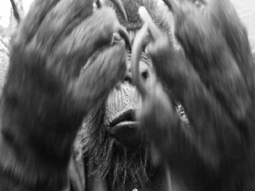

Evelyn Rüsseler aka bear boy
 CRIS ! MENACES! Schreie! Verwünschungen! – Video 2014 – 3 Min
Regie: Evelyn
Rüsseler – Kamera: Stéph Beck –
Performance: Bear Boy – Sound
Design & Editing: Bear Boy
Ein Film nach dem lettristischen Poem „Cri pour Cinq Million de Juifs Égorgés“ von Isidore Isou aus dem Jahr 1947. Isou schrieb es in Paris zwei Jahre nach seiner Flucht aus Rumänien. Ein Klagegebet für die Ausgelöschten, ein Verfluchen der Täter, der Tatorte. Eine Aufzählung der Eisenbahnstationen hinter denen sich die Konzentrationslager der Nazis befanden. Ein Affe spricht, weil ein Mensch kaum ertragen kann, was geschehen ist.
A visual track for the lettristic poem „Cri pour cinq million de Juifs Égorgés“ (1947), a poem Isidore Isou wrote barely two years after escape from Romania to Paris. A lament for millions killed by Nazi terror, in the same moment a damnation of the executors by tearing the names of the sites of extinction into syllables.
Evelyn Rüsseler aka Bear Boy, geb. 1961, macht Experimentalfilme und -videos über Freunde, Tierverwandlungen und tote Dichter, schreibt Romane und performt Charaktere die aus den Träumen entstehen. Lebt in Berlin, München und an der Ostseeküste.
Ausstellungen (Auswahl): 2014 Burratorio – ein Esels(an) alphabet – 2012 Tropicamp, HAU, Berlin – 2012 1x Medium, bitte, AK Wehrli, Galerie Les Complices, Zürich – 2012 DIY-Queer Filmfestival Zürich